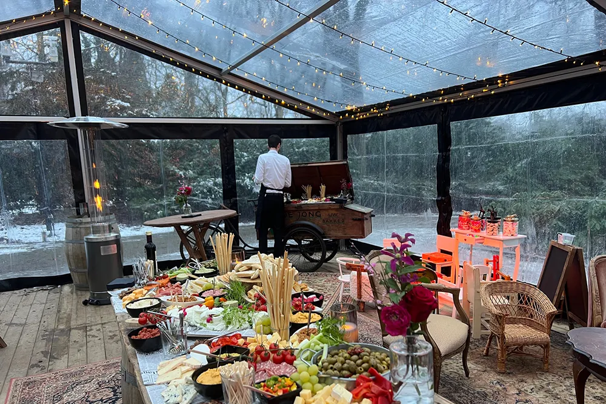
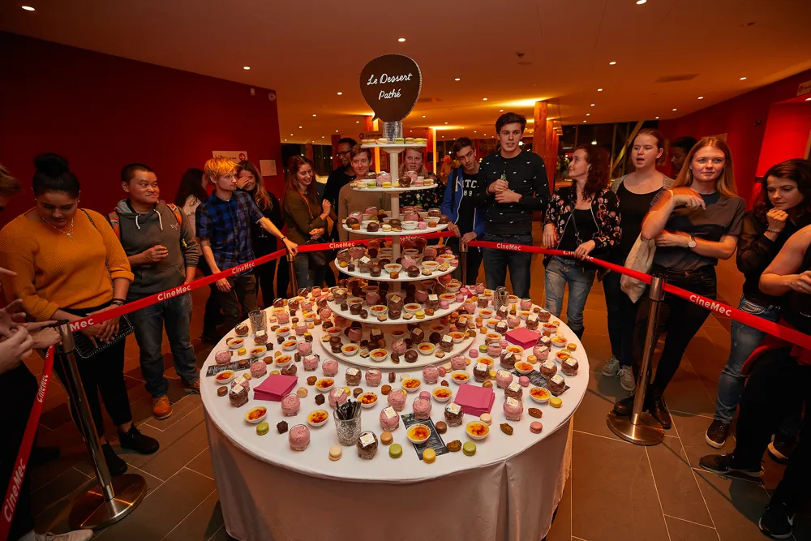

Catering & events
Catering op maat voor elk evenement
Van een borrel voor de afdeling tot een diner met een sterrenchef. Zakelijk of privé, we koken en organiseren mee. En als je wilt, proef je eerst.
Vraag een offerte aanEerst proeven? Vraag een proefdiner aan
Proefdiner aanvragenOntdek
Onze concepten
Grote en kleine evenementen, altijd op maat. Geen standaardmenu of standaardoplossing, maar een voorstel dat past bij je gasten, je locatie en het moment.

Corporate catering
Van sponsordiner tot productlancering. Altijd op maat, nooit een standaardmenu.
Bekijk corporate catering
Private events
Bruiloften, jubilea en tuinfeesten. Wij koken en organiseren mee.
Bekijk private events
High-end catering
Een diner met een fine dining- of sterrenchef, op jouw locatie.
Bekijk high-end catering
Concept catering
Eten, drinken en styling die passen bij het thema van je evenement.
Bekijk concept catering

Reserveer op tijd
Is jouw datum nog vrij?
Neem contact op en we kijken meteen of je datum nog beschikbaar is. Daarna stellen we samen een voorstel op dat bij je evenement past.
Check je datum
Zakelijk
Voor bedrijven
Al vele jaren voor grote en kleine klanten. We kijken naar wat jouw evenement nodig heeft, niet naar een standaardoplossing.
Bekijk corporate catering
Privé
Voor thuis en familie
We komen uit een evenementenbureau. Daarom regelen we desgewenst ook meubilair, styling, muziek en licht.
Bekijk private events
High-end
Aan tafel met een sterrenchef
We werken samen met fine dining- en Michelin-sterrenchefs. Voor een zakenlunch, een diner voor relaties of een avond thuis.
Bekijk high-end catering

5,0 uit 10 reviews op Google
Wat opdrachtgevers zeggen
“Zeer aan te raden om je event bij dit bedrijf te laten verzorgen. De afspraken qua tijd zijn correct en de reactie is snel. Mijn gasten hebben genoten van het heerlijk buffet.”
“Wij zijn ontzettend blij met onze samenwerking met Event Culinair! Ze zijn ervaren, professioneel en denken graag mee op verschillende vlakken.”
“Heerlijk gegeten, ouderwets lekkere stampotten. Aanrader!”

Onze belofte
Geen loze kreten
We zijn een goede, maar ook een bijzondere cateraar. Omdat smaak en beleving niet in woorden te vangen zijn, kun je bij ons eerst proeven. Daarna beslis je.
Goed om te weten
Veelgestelde vragen
- Wat kost catering per persoon?
- Dat hangt af van het concept, het aantal gasten en wat er verder geregeld moet worden. Op elke conceptpagina staat een vanafprijs. Voor jouw evenement maken we een voorstel op maat.
- Voor hoeveel gasten verzorgen jullie catering?
- Voor grote en kleine evenementen. Van een borrel voor een afdeling tot een gala met honderden gasten.
- Kan ik eerst proeven?
- Ja. Je kunt bij ons een proefdiner aanvragen, zodat je weet wat je gasten krijgen.
- Regelen jullie ook meubilair en styling?
- Ja, als je dat wilt. We denken mee over het concept of nemen de hele organisatie over: meubilair, styling, muziek, licht en geluid.
- Kunnen jullie een sterrenchef regelen?
- We werken samen met fine dining- en Michelin-sterrenchefs. Of een chef beschikbaar is, hangt af van de datum.
Offerte
Vertel ons over je evenement
Datum, aantal gasten en wat voor moment het moet worden. Dan maken we een voorstel, of nodigen we je uit voor een proefdiner.